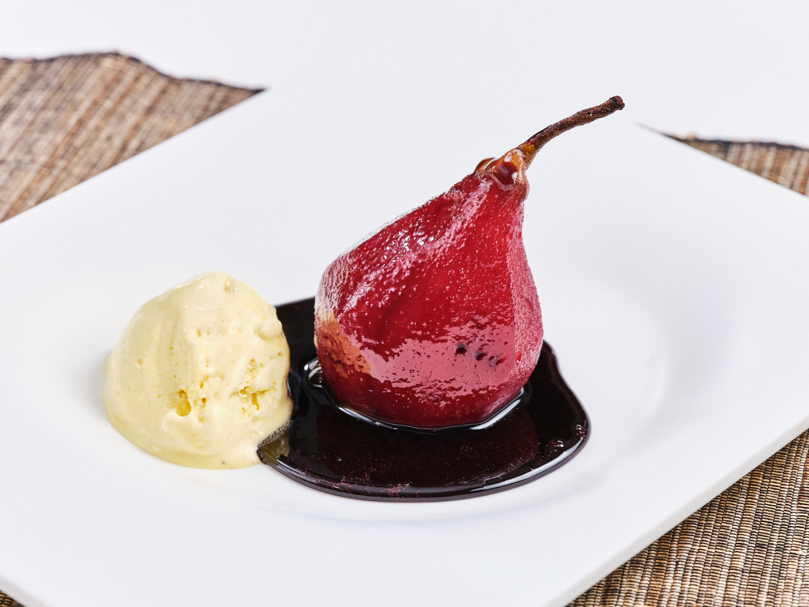

Tiramisú
El clásico italiano con café, mascarpone y cacao.

Peras al Vino
Peras cocidas lentamente en vino tinto especiado.
El clásico italiano con café, mascarpone y cacao.
Peras cocidas lentamente en vino tinto especiado.